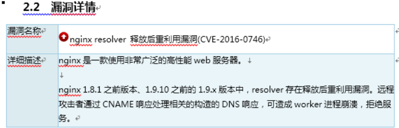

5.3. nginx版本升级¶
因为本人碰见过自己线上业务使用检测软件对web URL进行检测的时候，提示存在安全隐患，并且详情为“空指针间接引用漏洞出现个数超出，resolver存在释放后重利用漏洞。远程攻击者通过CNAME响应处理相关的构造的DNS响应，可造成worker进程崩溃，拒绝服务”具体截图如下：

解答：其实解决办法很简单，就是本人之前搭建版本为nginx1.8.1，那么把nginx版本升级一下即可以避免。本文主要讲解怎么样进行nginx在线升级。首先下载nginx最新软件包，这里我下载了nginx1.12.2版本 wget http://nginx.org/en/download.html/nginx-1.12.2
查看当前nginx版本号 cd /usr/local/nginx/ （进入自己nginx的安装目录） sbin/nginx -V （查看版本号） nginx version: nginx/1.9.4 built by gcc 4.8.5 20150623 (Red Hat 4.8.5-28) (GCC) built with OpenSSL 1.0.2k-fips 26 Jan 2017 TLS SNI support enabled configure arguments: –user=nginx –group=nginx –prefix=/usr/local/nginx –with-http_stub_status_module –with-http_ssl_module
解压新下载的软件包，并且进入到解压目录下
tar xf nginx-1.12.2.tar.gz
cd nginx-1.12.2
接下来编译
./configure --user=nginx --group=nginx --prefix=/usr/local/nginx --with-http_stub_status_module --with-http_ssl_module(以上面显示参数为准)
make (注意，不需要make install，不然一些配置文件都会更新)
更改老版本的nginx可执行文件
mv /usr/local/nginx/sbin/nginx /usr/local/nginx/sbin/nginx.old ###把老版本的nginx更名
cp nginx /usr/local/nginx/sbin/nginx ###拷贝新的nginx文件过去
进入nginx安装目录，测试查看nginx版本号
cd /usr/local/nginx
sbin/nginx -t
the configuration file /usr/local/nginx/conf/nginx.conf syntax is ok
configuration file /usr/local/nginx/conf/nginx.conf test is successful